Why I Choose to Be a Full-Stack Designer
The gap between design and development has always felt artificial to me. Here's why I believe the future belongs to those who can bridge both worlds...
Read more →End-to-end design delivery case study, from UI/UX design to front-end implementation.
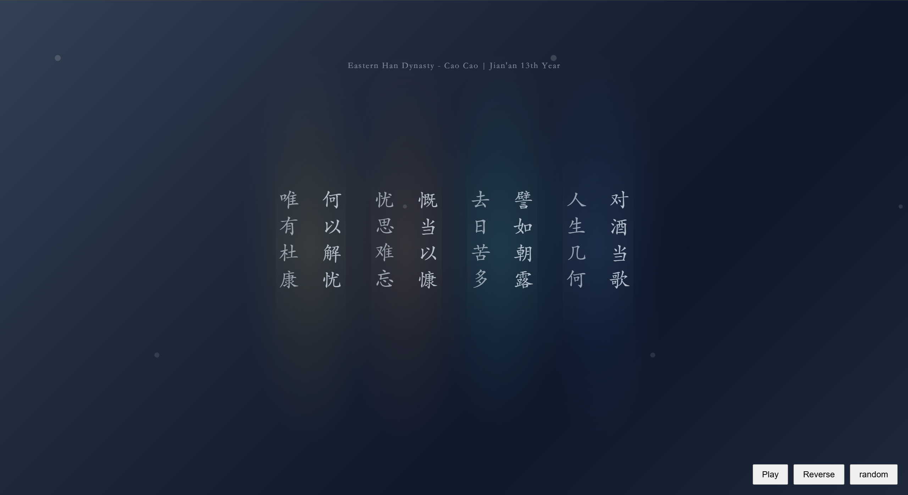
// Audio-visual poetry
const verse = document
.querySelector('.poem');
verse.addEventListener('click',
() => playTone());
Full-stack design implementation case: Independently completed user research, interaction design, and visual design to create a high-fidelity interactive prototype.
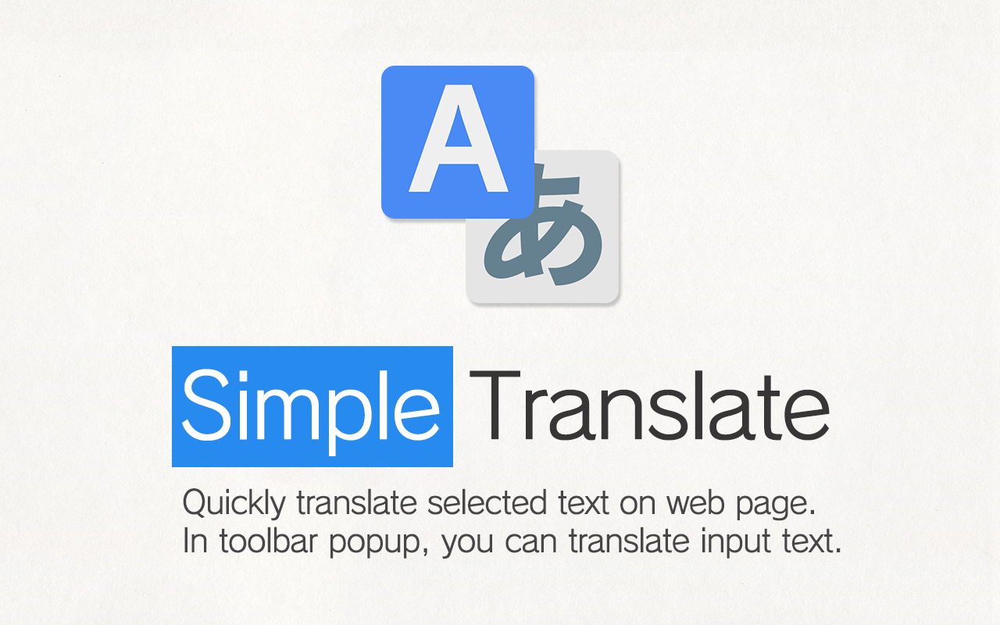
// Browser extension
chrome.runtime
.onMessage.addListener(
(req, sender, res) => {
translate(req.text)
.then(res);
});
Chrome Immersive Translation Plugin:Adopt product-oriented thinking to cover full workflow from requirement analysis to frontend implementation, with complete functional delivery.
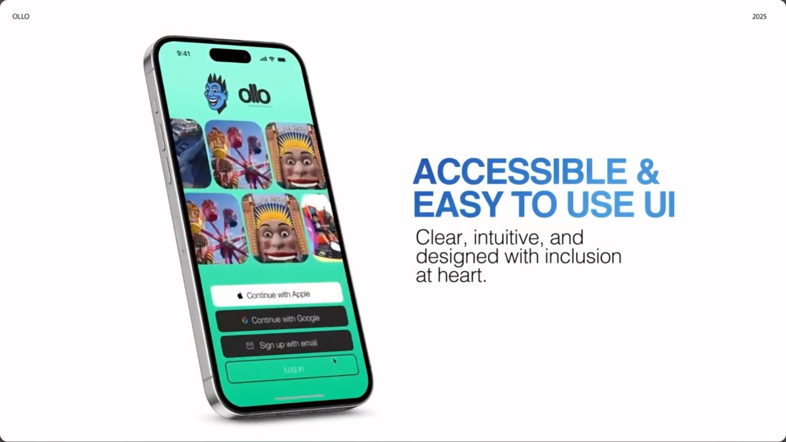
// AR marker detection
navigator.geolocation
.watchPosition(pos => {
const nearby = markers
.filter(m =>
distance(m, pos) < 50
);
});
An AR‑powered mobile experience that revitalizes Luna Park through playful exploration, social interaction, and inclusive digital design
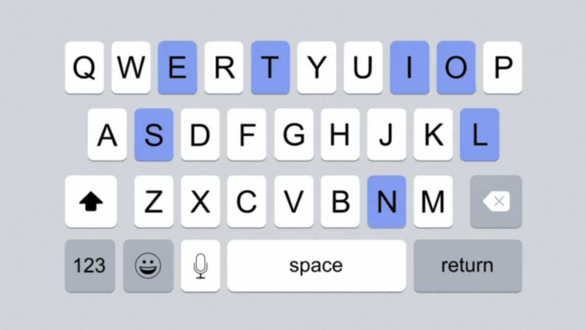
// Predictive input
const model = await
tf.loadLayersModel(
'model.json'
);
const prediction = model
.predict(inputTensor);
Explore innovative typing interaction paradigms, breaking traditional keyboard input patterns to build more intuitive, efficient text experiences.
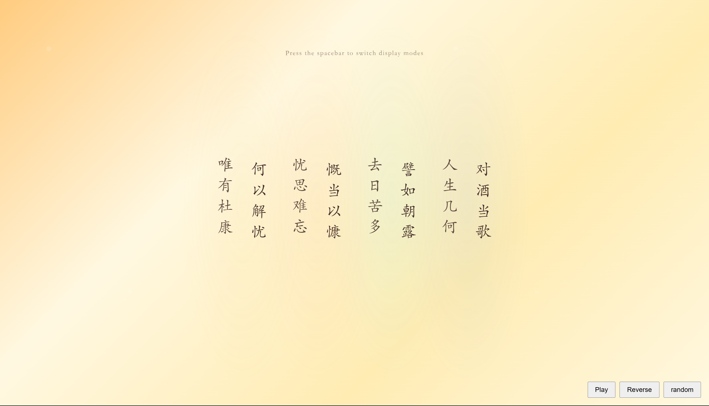
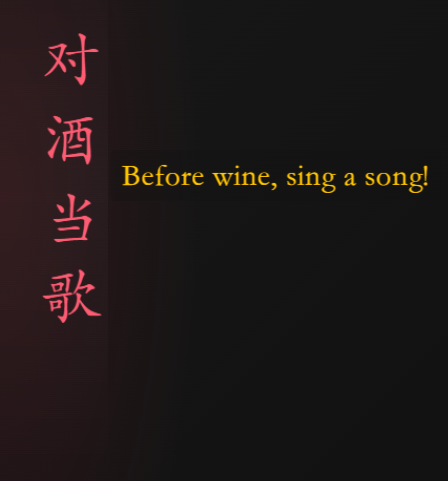
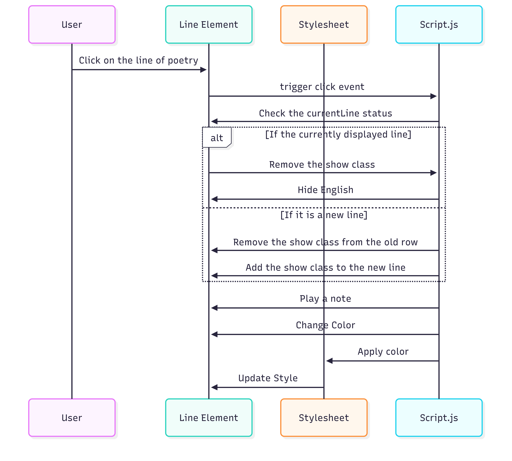
Short Song, Long Life is an interactive poetic experience that reinterprets the ancient Chinese poem Short Song.
It integrates vertical typography, dynamic visuals, and interactive audio to create an immersive, explorative reading journey that prioritizes poetic experience over instrumental translation.
Classical poetry is often presented passively, making it difficult for modern users to engage deeply.
Traditional translations prioritize literal meaning over rhythm, mood, and cultural context, weakening the emotional resonance of the original work.
This project turns poetry reading into active exploration.
Users click verses to trigger sound, color, translation, and annotations, sentence by sentence. The design encourages slow, mindful appreciation while building a cross‑language poetic experience.
Vertical Typography & Dynamic Animation
Traditional vertical layout honors classical poetry presentation.
Floating animations and breathing light effects bring static text to life, enhancing immersion without distraction.
Audio‑Visual Interactive Feedback
Clicking a verse plays soft, ethereal tones (Tone.js), shifts colors, and shows translation.
Double‑click reveals literary background. Hover and keyboard interactions add layered discoverability.
Progressive Information Design
Original poetry remains visually dominant.
Translations and annotations appear gradually to avoid overload. The interface guides users to read slowly, matching the rhythm of poetic appreciation.
Polished UI & Accessibility
Clean, minimalist layout with frosted glass translation panels ensures readability.
Day/night mode supports long reading sessions. Consistent interaction lowers learning cost.
Built with HTML, CSS, and JavaScript.
Uses Tone.js for polyphonic audio and custom CSS variables for dynamic color control. Focuses on smooth interaction and cross‑browser stability.
This work transforms classical poetry into a modern interactive experience.
It bridges cultural and linguistic gaps, encourages slow reading, and proves how interaction design can deepen emotional and cultural engagement.
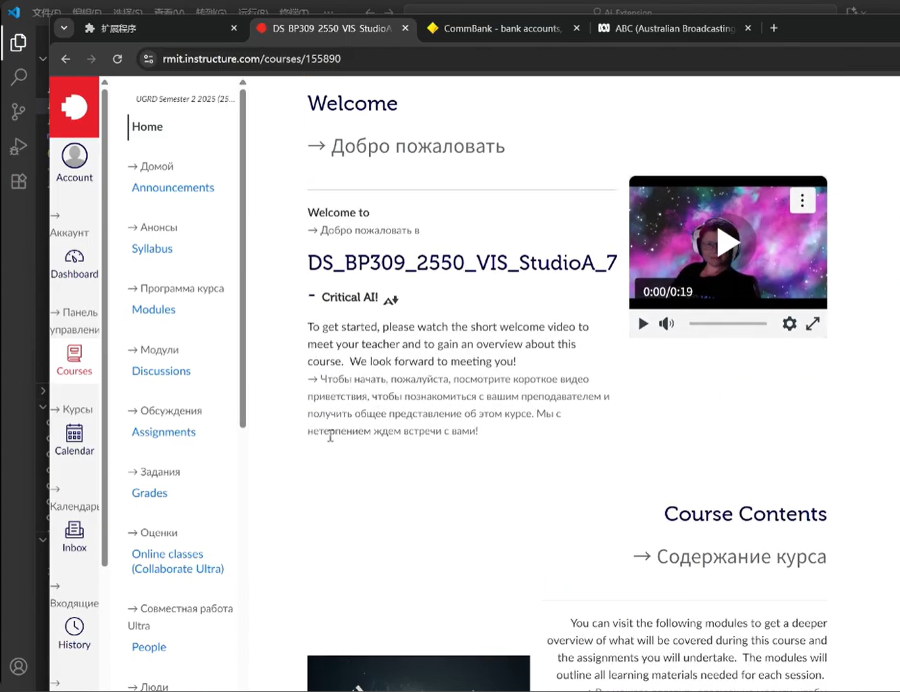
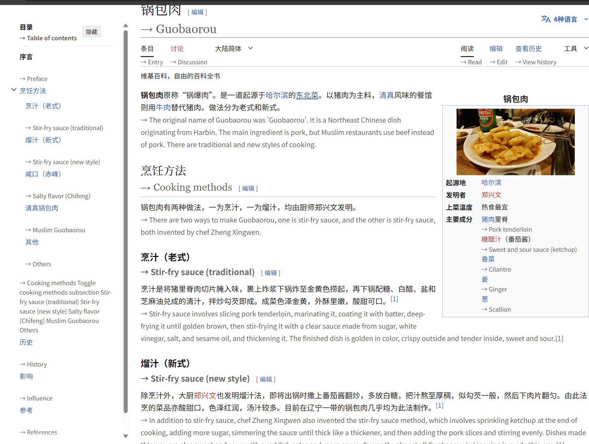
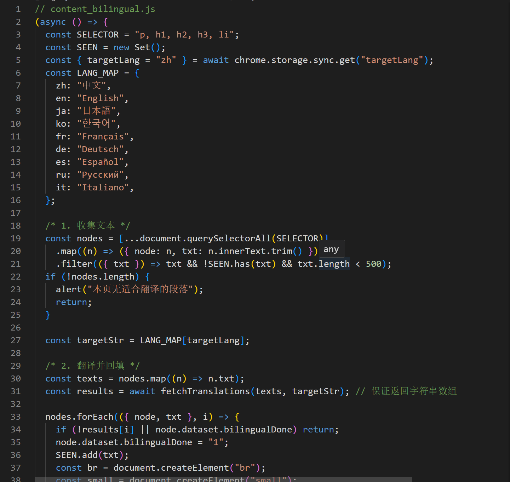
Simple Translate is a lightweight browser extension designed to break cross-language barriers on the web.
It provides fast, inline word translation, text summarization, and side-by-side bilingual display to improve reading efficiency and support quiet language learning.
Language differences limit access to global information online.
Existing translation tools are often slow, clunky, or visually disruptive, creating friction during browsing and learning.
This project simplifies translation into three core, intuitive functions.
Users can select text to translate, summarize long content, or turn entire pages into bilingual views—all without leaving the current page.
Inline Word Translation
Select any text on a webpage to get instant translation via right-click or shortcut.
Original and translated text appear together for clear, quick understanding.
Smart Text Summarization
Extract key points from long articles, papers, or paragraphs automatically.
Help users grasp core ideas efficiently and reduce reading time.
Bilingual Webpage Display
Show original and translated content side by side with synchronized scrolling.
Ideal for reading foreign sites and supporting passive language learning.
Minimal & Accessible UI
Clean, low-distraction interface with readable typography and soft color palette.
Optimized for long browsing sessions with zero unnecessary complexity.
Built with vanilla JavaScript for lightweight performance.
Uses AI API for accurate translation and summarization, with robust error handling and webpage compatibility.
Simple Translate creates a smooth, non-intrusive cross-language experience.
It improves information accessibility, boosts reading efficiency, and makes global web content more approachable for all users.
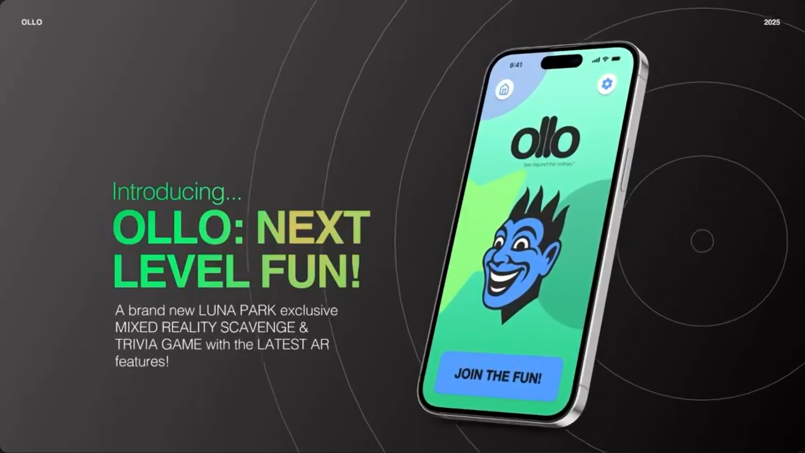
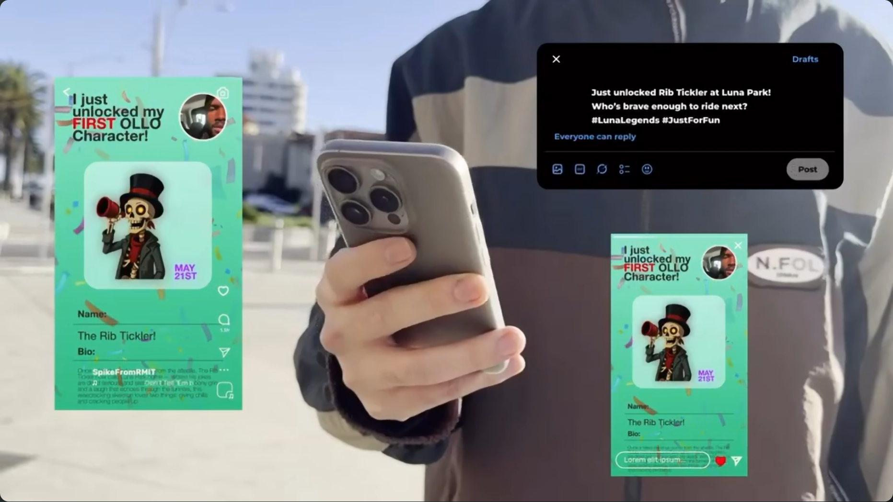
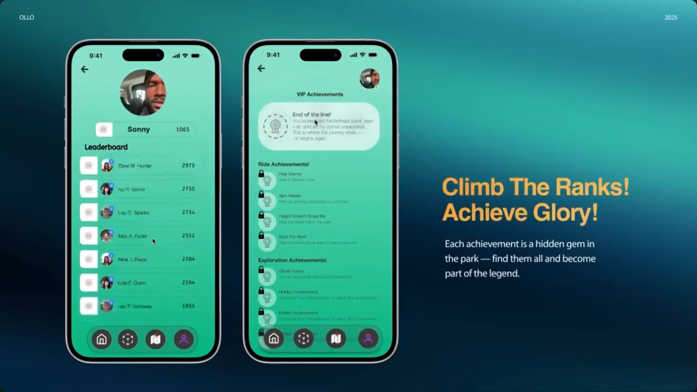
Luna Park aims to renew its appeal for youth while preserving its heritage.
Limited physical space and outdated digital experiences make it hard to create fresh, shareable, and immersive entertainment for modern visitors.
We designed a location‑based AR game that overlays quests, challenges, and storytelling onto the existing park.
The system encourages exploration, social sharing, and repeated visits without replacing the park's original charm.
AR Exploration & Quests
Users scan markers around the park to unlock trivia, photo challenges, boss battles, and treasure hunts.
Each activity ties to Luna Park's history and iconic attractions.
Social & Reward System
Completed challenges earn points, redeemable for discounts, merch, or AR filters.
Shareable moments drive social media exposure and repeat visitation.
Accessible & Inclusive Design
The app supports multilingual use, high contrast, large buttons, and non‑audio interaction.
It works for families, tourists, and visitors with diverse needs.
Unified Visual System
A bright, playful, and consistent UI connects the app to Luna Park's surreal, nostalgic identity.
Colors, typography, and icons maintain cohesion across all screens.
The journey starts with simple onboarding, then guides users through the park via map and AR.
Short, fun challenges reduce waiting friction and turn queuing into entertainment.
Ollo modernizes Luna Park in a non‑intrusive way.
It strengthens youth engagement, creates new revenue opportunities, and preserves the park's timeless character for future generations.
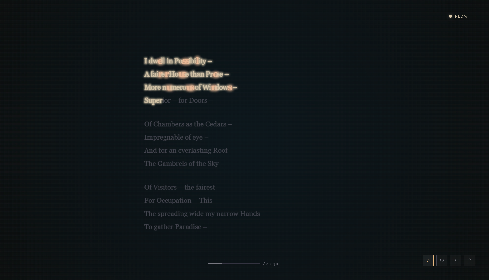
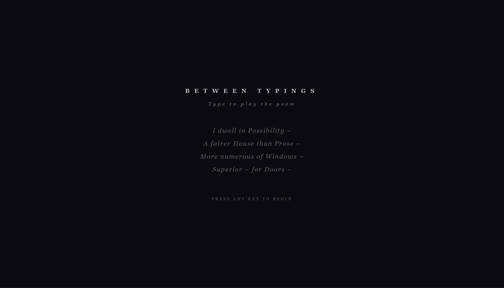
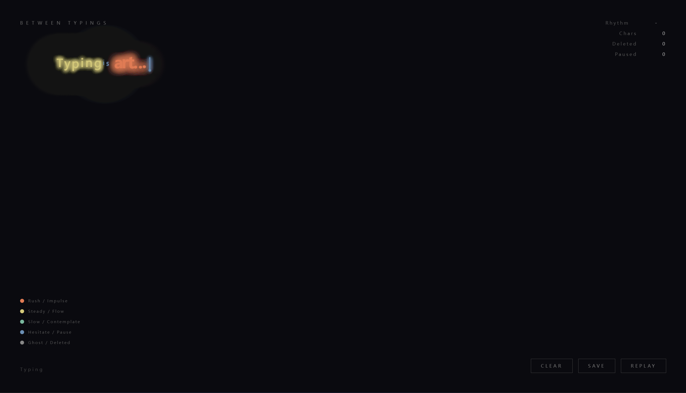
Breaking the efficiency-oriented single input mode, this conceptual interaction design explores the emotional value behind typing behavior. It reshapes subtle feedback and behavioral perception, endowing daily text input with emotional narrative and humanistic temperature.
Emotional Interaction Logic
Capture the subtle rhythm of typing, pause and modification, and translate inner thinking traces into visible interactive feedback.
Humanized Micro Experience
Abandon overly rational high-efficiency design, retain natural operation pauses and thinking gaps, and weaken mechanical coldness.
Conceptual Interface Exploration
Combine minimalist visual language with experimental interaction methods to balance conceptual expression and user perception.
This work regards the typing process as a complete emotional expression, not merely a tool for information delivery. It provides a new conceptual perspective for future emotional and behavioral interaction design.
A systematic approach to design — colors, typography, and components that create cohesive digital experiences.
Warm, print-inspired colors that evoke the tactile quality of paper and ink.
A pairing of editorial serif and clean sans-serif for hierarchy and readability.
Reusable UI elements that maintain consistency across the experience.
Drawing from editorial design — generous whitespace, careful typography, and a sense of physicality.
Animation that enhances rather than distracts. Every movement has purpose and follows physics.
Design serves the content. Clear hierarchy guides the eye, letting the work speak for itself.
Good design is for everyone. Sufficient contrast, readable type, and keyboard-friendly interactions.
The technologies and software that shape my creative workflow.
<HTML>
Semantic markup
.CSS
Custom properties & animations
JS{}
Vanilla JavaScript
Three.js
WebGL & 3D
Git
Version control
Understanding problems, exploring solutions
High-fidelity mockups in Figma
Clean code, real interactions
A snapshot of my current focus, learning, and building — updated regularly.
Iterating on my personal site — adding new features, refining the design system, and experimenting with micro-interactions. Currently focused on content depth and user experience.
Deep diving into AI-powered design workflows — from generative UI to intelligent prototyping. Experimenting with how AI can augment rather than replace the creative process.
Revisiting fundamental design principles. Focusing on how small details — spacing, color, typography — compound into polished interfaces.
Studying how motion can guide attention and create emotional connection. Looking at ways to bring more purposeful animation into web experiences.
Short reflections on design, technology, and the creative process.
The gap between design and development has always felt artificial to me. Here's why I believe the future belongs to those who can bridge both worlds...
Read more →From ideation to implementation, AI tools have become integral to how I work. Not as a replacement for creativity, but as an amplifier of intent...
Read more →In an age of infinite scroll and digital noise, there's something powerful about bringing the intentionality of print to the web...
Read more →The gap between design and development has always felt artificial to me. In an industry that loves to categorize and specialize, I've found that the most fulfilling work happens at the intersection.
When I first started learning design, I was frustrated by how often beautiful mockups failed to translate into functional products. The handoff process felt like a game of telephone — ideas getting lost, compromises being made without context, and the final result rarely matching the original vision.
So I started learning to code. Not to become a developer, but to understand the medium I was designing for. What began as a practical necessity quickly became a creative advantage.
"The ability to take an idea from concept to completion is transformative." — On Full-Stack DesignImplementation
There's something powerful about being able to take an idea from concept to completion. When you understand both the design constraints and the technical possibilities, you can make better decisions at every stage.
I can prototype interactions that feel real because they are real. I can explore responsive layouts by actually building them, not just imagining how they might behave. And when something isn't working, I can iterate immediately rather than waiting for development resources.
I don't think every designer needs to code, nor every developer needs to design. But I do believe that the boundaries between these disciplines are more permeable than we often admit.
Being a "full-stack designer" isn't about doing everything — it's about having enough understanding to collaborate effectively, to prototype authentically, and to bring ideas to life without depending on handoffs.
In a world where tools are becoming more powerful and AI is handling more of the implementation details, the ability to think across the entire stack — from user need to technical solution — feels more valuable than ever.
From ideation to implementation, AI tools have become integral to how I work. Not as a replacement for creativity, but as an amplifier of intent.
When ChatGPT first emerged, I'll admit I was skeptical. Another tool promising to revolutionize creativity? I'd heard that before. But after integrating AI into my daily workflow, I've found it to be less of a replacement and more of a collaborator.
ResearchAI has transformed how I approach research. Instead of spending hours sifting through articles and documentation, I can now have focused conversations with AI to quickly understand new domains, identify best practices, and discover edge cases I might have missed.
For my recent translation plugin project, I used AI to rapidly understand the Chrome Extension API, explore different implementation approaches, and anticipate potential technical challenges — all before writing a single line of code.
"AI suggests possibilities; I curate, refine, and implement." — My Design PhilosophyExploration
Tools like Midjourney have changed how I explore visual directions. I can generate dozens of concept images in minutes, testing color palettes, compositions, and moods that would have taken hours to create manually.
But here's the key: I don't use these outputs directly. They're starting points, inspiration for my own work. The AI suggests possibilities; I curate, refine, and implement.
Perhaps the most significant change has been in development. AI coding assistants help me write cleaner code faster, catch bugs I might have missed, and learn new techniques through interactive examples.
When building this portfolio, AI helped me implement complex animations, optimize performance, and structure my code more maintainably. It was like having a senior developer pair programming with me.
ConclusionDespite all these tools, the core of design remains deeply human. AI can generate options, but it can't understand context, empathize with users, or make the subjective judgments that separate good design from great design.
The designers who will thrive are those who learn to work with AI — using it to handle routine tasks while focusing their energy on the creative and strategic work that machines can't replicate.
In an age of infinite scroll and digital noise, there's something powerful about bringing the intentionality of print to the web.
I've always been drawn to editorial design — the careful consideration of typography, the generous use of whitespace, the sense that every element has been deliberately placed. There's a quiet confidence to well-designed print that I find increasingly rare in digital experiences.
LessonsPrint designers work with constraints that digital designers often ignore. A magazine spread has fixed dimensions. A book has a defined beginning and end. These limitations aren't obstacles — they're creative catalysts.
"The best principles of design are timeless, regardless of the medium." — On Print & Web
When I designed this portfolio, I wanted to bring some of that intentionality to the web. The grid system is inspired by editorial layouts. The typography follows the hierarchy of a well-designed magazine. Even the animations are subtle, like the gentle turn of a page rather than the flashy transitions that dominate modern web design.
Print demands attention. You can't scroll past a magazine article; you have to engage with it. I've tried to create that same sense of presence here — a space where the work can breathe and visitors can take their time.
This isn't about nostalgia for a bygone medium. It's about recognizing that the best principles of design are timeless, regardless of the medium. Clarity, hierarchy, restraint — these matter whether you're designing for paper or pixels.
ConclusionAs web technologies become more powerful, there's a temptation to use every feature available. But I believe the most impactful designs will be those that use new capabilities in service of timeless principles.
The web doesn't need to imitate print, but it can learn from it. In a world of infinite possibilities, the discipline of print design — the careful editing, the attention to detail, the respect for the reader — feels more relevant than ever.
Bridging design thinking and frontend implementation, turning creative visions into pixel-perfect digital experiences.
 My cat, my muse 🐱
My cat, my muse 🐱
I am a Digital Media student at RMIT University, focused on becoming a Full-Stack Designer who can bring creative visions to life as fully interactive digital experiences.
Unlike traditional designers, I not only focus on vision and user experience, but also possess the ability to convert designs into high-quality code. My core competencies cover three dimensions: UI/UX Design、 Front-end Development and Product Thinking
Through my projects, I actively integrate AI tools to boost design efficiency, while building skills in engineering-focused practices like cross-platform adaptation and design system creation.